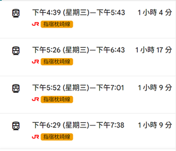

於約定地點（或鹿兒島中央站）集合，準備辦理乘車手續、購買補給品，等待搭乘超人氣觀光列車。
（7 月初需提前搶票）體驗黑白雙色塗裝的特色列車。車門開啟時會冒出白煙，呼應浦島太郎龍宮傳說。沿途一邊觀賞錦江灣與櫻島火山，一邊享用列車限定布丁。
抵達指宿站後前往用餐。享用在地新鮮又實惠的迴轉壽司或日式海鮮料理，為下午的砂浴行程好好充電。
前往世界罕見的海岸天然地熱砂浴（如砂樂溫泉）。換上浴衣後躺在沙灘上，由工作人員覆蓋溫熱的黑砂，利用溫泉熱能促進全身血液循環，消除前兩天的疲勞。
結束放鬆的指宿行程，搭乘 JR 列車（可安排下午班次的玉手箱號或普通列車）返回鹿兒島市區。

回到市區享用晚餐。餐後到車站商圈或地下街採購鹿兒島特產（如薩摩揚魚餅、輕羹、知覽茶、或薩摩芋甜點等），為鹿兒島的行程劃下完美句點。